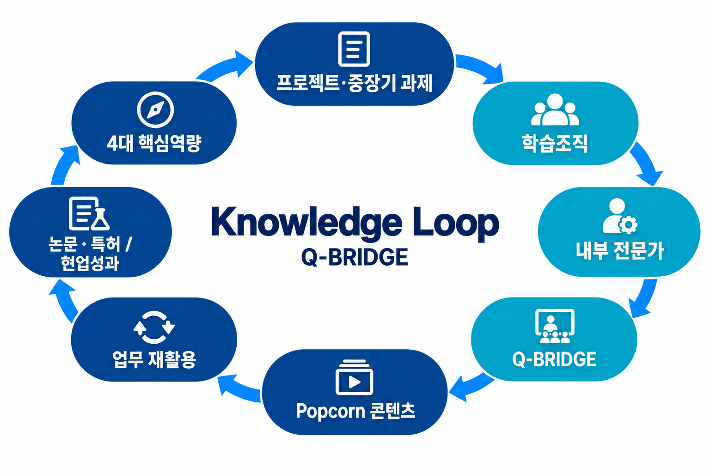
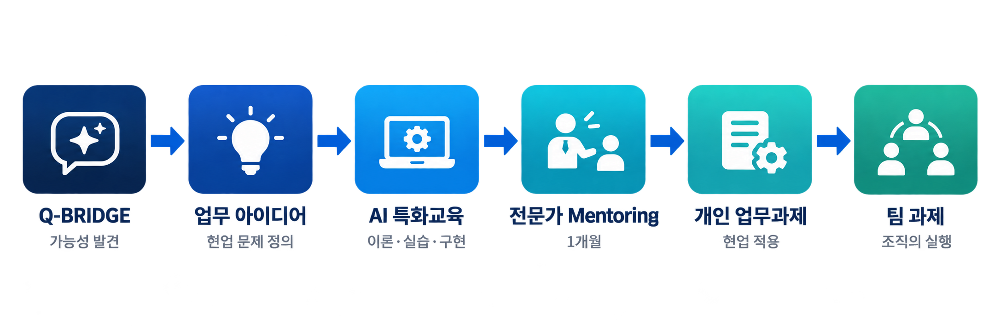
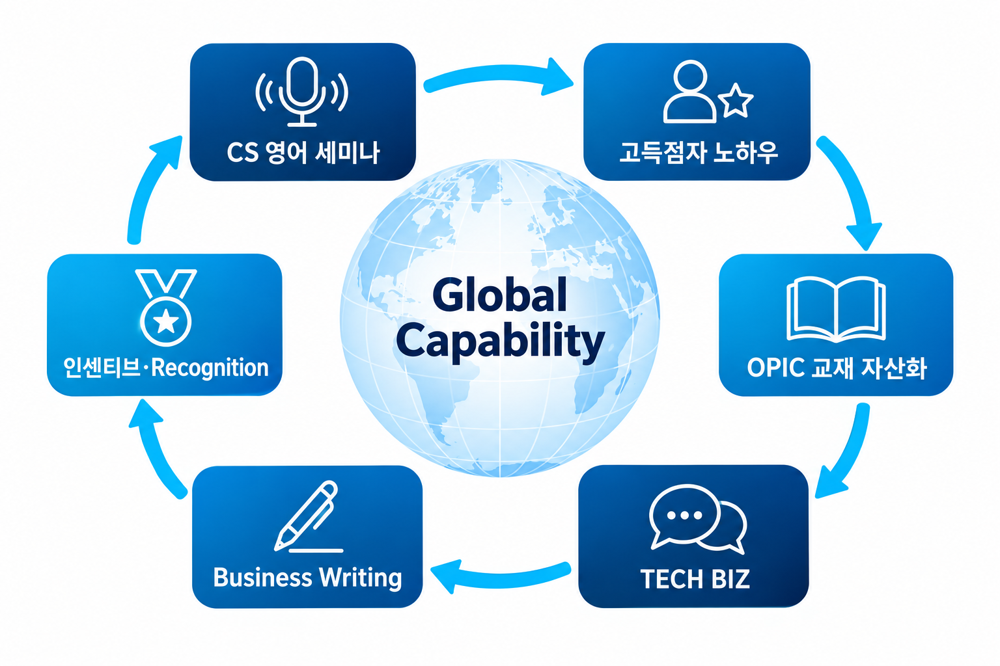

LEARNING VOYAGE
배움이 성과가
되는 항해.
리더·구성원·EA가 함께 만든,
배움을 조직의 실력으로 만드는 품질팀.

미래 품질 경쟁력OUR SHARED DESTINATION
4대 핵심역량신뢰성 · 평가기술CS · AUDITAX통계 · DATA · 시스템
LEARNING VOYAGE
리더·구성원·EA가 함께 만든,
배움을 조직의 실력으로 만드는 품질팀.
ONE TEAM / ONE CONNECTED LEARNING SYSTEM

직무교육체계 · AI 추천 · Dashboard
학습조직 · 내부 전문가 · Q-BRIDGE
AI 업무과제 · 글로벌 어학역량
01 / LEARNING ENGAGEMENT · ABOVE THE BENCHMARK
월평균 직무교육체계 활용률
2026년 1–6월 DScovery · 중복 제외 월평균
DS부문 평균 대비
1.83배
+3.4%p활용률 격차
59–69% 7월 교육목표 중간 실행률
02 / Q-BRIDGE & LEARNING COMMUNITY

2건 / 월Q-BRIDGE
25% 내외팀원 지속 참여
4→13건
프로젝트·학습조직·지식공유·연구활동을 연결하는 과정에서 확인된 변화입니다.
03 / LEARNING → PERFORMANCE
40건
개인의 실제 업무에서 찾은 아이디어
10건
개인의 배움을 조직의 실행으로

GLOBAL CAPABILITY / ORGANIZATIONAL STRENGTH

글로벌 고객 대응 · 미래 CS 인력 Pool
리더 목표관리 → 실전 학습
→ 노하우 자산화 → 동기부여
17%
어학역량 상승률 TSP총괄 내 최고
PERFORMANCE / OUR DIFFERENCE, IN EVIDENCE
품질팀 7.5% vs 부문 평균 4.1%
+3.4%p4건 → 13건
9건 증가40건 발굴 → 10건 팀 과제화
4건 중 1건리더십 · 실전 학습 · 지식 자산화
총괄 내 최고OUR STRENGTH리더의 참여부터 학습 실행·지식 공유·현업 적용까지, 하나로 연결합니다.
OUR STRENGTH / LEARNING INTO PERFORMANCE

리더의 관심을 구성원의 실행으로,
개인의 경험을 팀의 지식과 역량으로 연결합니다.
운영사례 공유 · DS부문 Talent Development 우수사례 선정·인터뷰